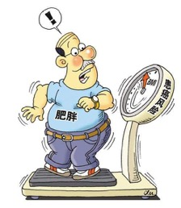
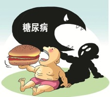
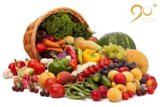
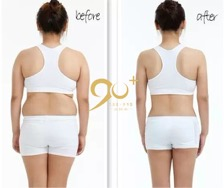
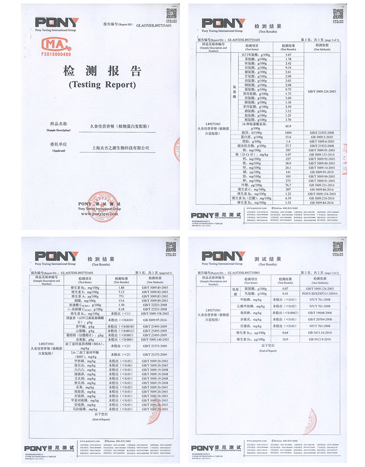

久食佳（90+）于你而言有多重要？
让肥胖的他重燃瘦身的希望

长春的周总，40岁，常年负责工程项目的他，常常感觉身体非常疲乏。进行90+健康计划后，严格按久食佳餐单进食，在同时保证正常饮水量、睡眠时间以及搭配简单运动的情况下，仅仅26天，体重由原来的160斤瘦到了现在的146斤，睡眠质量好了，每天早上醒来都精神十足，不再动不动打盹犯困。
让被三高困扰的他重获健康的体魄
福建的吴先生，45岁，常年置身高强度高压力的工作环境，让他刚刚步入中年就患上了高血糖和高血压，最高时高压230/低压128。在实施90+健康计划后，短短一个半月，高压135/低压88，血糖降到了正常值，心率调上来，头晕、胸闷的症状也明显减少。
让饱受糖尿病折磨的她减轻病痛

烟台的张女士，71岁，在实施90+健康计划之前患有高血压、糖尿病、高尿酸、脂肪肝。特别是30多年的糖尿病，最多一天打过103个单位的胰岛素，实施健康管理前打77个单位。即使吃降糖药空腹血糖仍然为14.6mmol/L，开始进行90+健康管理35天，口服药不吃了，每天打19个单位的胰岛素，血糖控制在5.2左右。
让肿瘤术后身体脆弱的她焕然新生
河北的徐女士，46岁，乳腺癌术后切除双侧乳房，并且做了放化疗，身体的反应很大，脱发严重，没有食欲，而且睡眠质量不好，医生告诉她本来体质就不好，再加上放化疗对身体的损伤大，所以会这样。实施90+健康计划1个月，感觉自己的体力越来越好，爱吃饭了，而且精气神也好了。
90+健康计划是什么？
“现代的慢性病就是生活方式病”。肥胖是人体能量摄入和消耗失衡的结果，高脂肪饮食将抑制代谢率使体重增加而肥胖。肥胖又是糖尿病发病的重要原因，肥胖者存在着明显的高胰岛素血症，高胰岛素血症可以使胰岛素与其受体的亲和力降低，导致胰岛素作用受阻，引发胰岛素抵抗。三高最常见的病患亦是肥胖者，脂肪过多，必然对血管造成一定的挤压。肿瘤患者99%以上都存在营养不良，缺乏必要的蛋白、维生素、矿物质、纤维素。这一切都是由于生活作息不规律、饮食难以多样化，造成营养失衡的结果。
90+健康计划，就是从人的日常作息和饮食出发，合理的搭配一日三餐，科学管理生活作息以及运动情况。因为影响健康的主要因素中，60％是生活方式和行为习惯。因此，只要给身体补充足量均衡的营养，养成良好的生活方式和正确的行为习惯，慢性病都将慢慢得到改善。
跟随久食佳（90+），开启你的健康人生！

久食佳由中国保健协会食物营养与安全专业委员会副会长——高高老师，历时17年研制开发，得到业内大量权威专家认可。全国上百位资深营养师和健康管理师的强力推荐！
精选90多种天然食材，富含大量活性营养物质

久食佳（90+）营养餐，精选90多种进口食材，利用现代分子细胞生物技术，萃取出超浓缩营养物质，口感醇厚。
中西结合科学配方，吸收安全高效
久食佳（90+）遵循中医食疗生克理论，依据现代医学血型与食物拮抗理论、免疫学等理论，进行了科学全面的营养配比。剔除了食物中的过敏原，让营养吸收更安全、更迅速。
纠正营养失衡，重启代谢功能

久食佳（90+）依靠均衡而全面的营养，从根本上纠正人体营养失衡状态，重新启动人体新陈代谢功能，从而帮助预防和改善白领常见的亚健康问题。
国际权威机构认证

久食佳（90+）通过国际权威机构谱尼检测，检测结果表明，久食佳（90+）富含人体每日所需的40多种营养素，并且含有大量植物活性物质。
企业荣誉